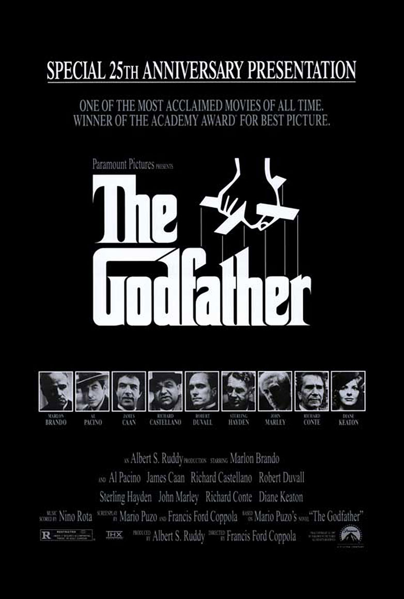
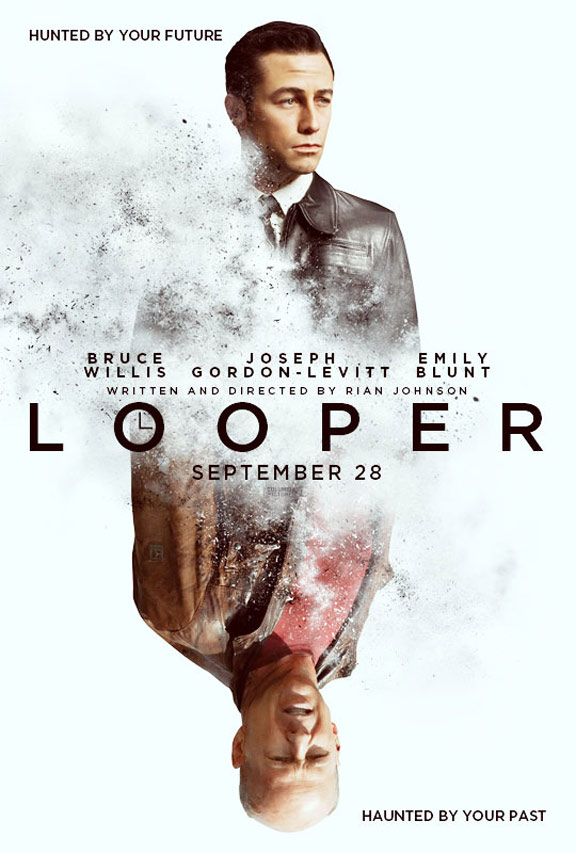
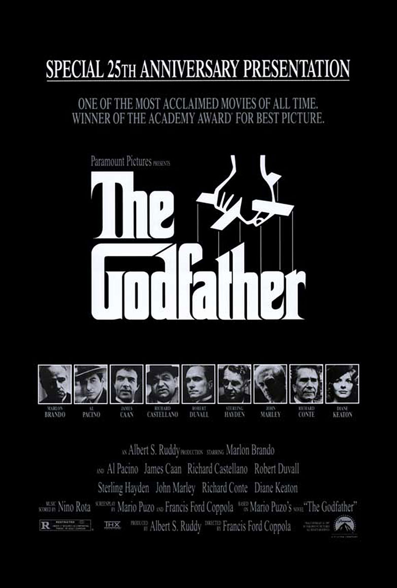
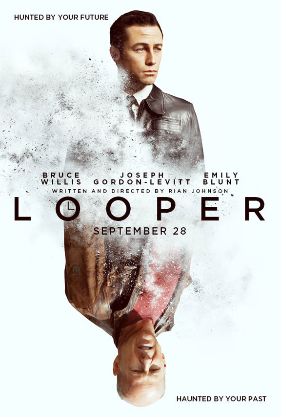
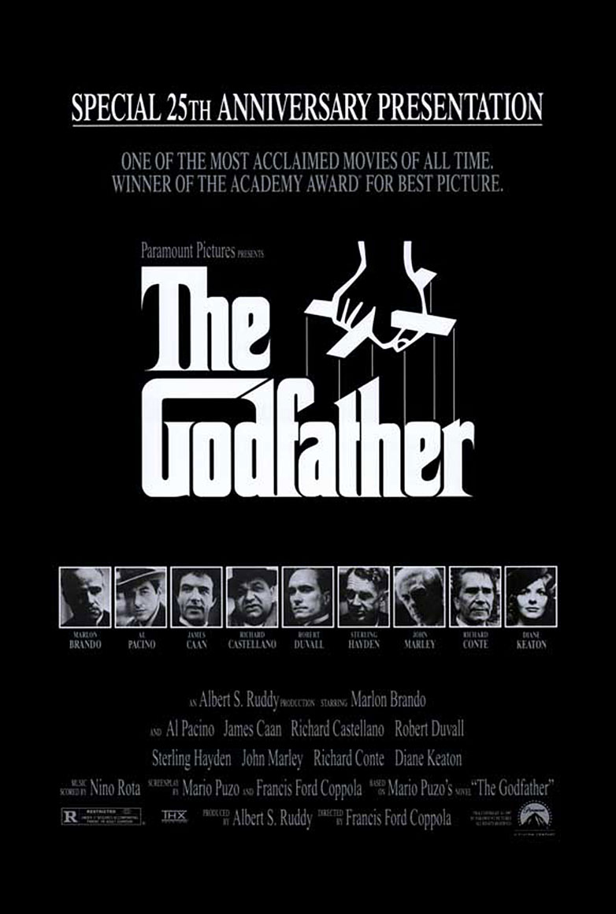
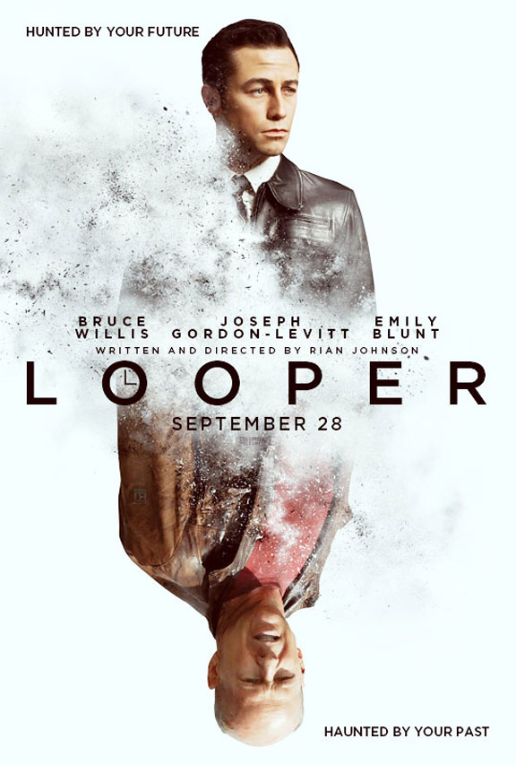

Another extremely important visual aspect of film poster design is typography. Typography in film posters is used to display a film title, main actors in a film, directors, a motto, a quote and/or other essential information. Good film posters aim to select a typeface that all at once attracts an audience while revealing an idea, ambiance, style, theme…of the film. The selected typeface may in itself portray the desire effect or be edited to do so. I take in example the typefaces used in the poster for The Heathers, a high school clique “chick flick” themed movie. The foreground of the poster shows the main characters, two high school lovers, caressing one another in front of a classroom chalkboard. Alone, this image already reveals the theme of the film, introduces main characters… Additionally, the film title is positioned above all, largely, in the center top of the poster. The selected font is a hot pink chalkboard handwriting-looking one. These distinct typographic decisions release more information about the film. They give a taste of the high school, girly theme in the film. These sorts of theme-revealing typographic choices are also visible in the posters for La La Land and Call Me By Your Name.
Another trend in film title typography in posters is the addition of plot elements merged with film titles. An example of this would be in the typography for the posters of the Harry Potter series. The main character’s unique scar’s form is merged with the bottom of the letter “P” in “Potter”. These types of elements are also visible in the posters for The Godfather and Looper.


Visit Google Fonts for access to various font styles and imagine what sort of film themes they could correspond to.